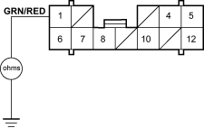

For proper inspection of vacuum switch, do these checks.
- Brake booster leak test:
Press the brake pedal with the engine running, then stop the engine. If the pedal height does not vary while pressed for 30 seconds, the vacuum booster is OK. If the pedal rises, the booster is faulty.
With the engine stopped, press the brake pedal several times using normal pressure. When the pedal is first pressed, it should be low. On consecutive applications, the pedal height should gradually rise. If the pedal position does not vary, check the booster check valve.
- Check the brake booster check valve, vacuum hoses and connections for leaks or restrictions.
- Verify brake fluid level switch and parking brake switch operation. If necessary, do these tests.
- Make sure the ignition switch is OFF, then disconnect the 12P connector (green colour) from the under-dash fuse/relay box and vacuum switch 1P connector.
- Check for continuity between the 12P connector terminal No. 1 and body ground.
UNDER-DASH FUSE/RELAY BOX 12P CONNECTOR

Wire side of female terminals
Is there continuity?
YES - Repair short to body ground in the GRN/RED wire between the vacuum switch and MPCS (built into the under-dash fuse/relay box).
NO - Go to step 3.